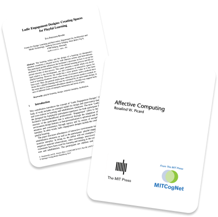
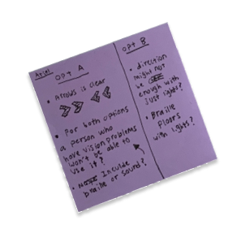
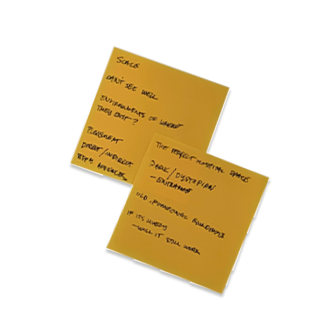
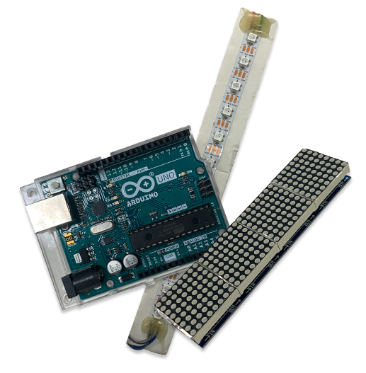

This site serves as the central space for all activities conducted by Abdul Matin during his final year of studies at Lasalle College of the Arts. The bulk of the information available revolves around his exploration within the healthcare sector in hopes of implementing a technological intervention as part of his Graduation Project in the Computation in Design Atelier, led by Andreas Schlegel.
We are bound to face stress and anxiety when faced with illnesses. But when visiting hospitals, the negative emotions are heightened due to being unsure of what’s to come. It doesn’t help that the environment we’re forced to wait in is often sterile, increasing our emotional unrest. However, hospitals have implemented measures such as outdoor gardens to offer an escape from their predicaments. How else can we as designers promote a space of healing when hospitals are limited to their current structures, daily regiments and limited budgets?
In this segment, I key in notable advancements during my course of study. These may include insights from readings, consultations, workshops and more. Weekly entries reveal my process of thinking as I further develop my ideas to final fruition.
 Making is my form of research, a design-led approach to finding out how to make things work and more. This gallery reveals the slew of experiments in both physical making and in tech to test their capabilities in hopes of combining the learnings into the prototyping phase later down the road.
Purpose-led design iterations fill this portion with the intention of crafting high-fidelity objects of interaction. The prototype phase involves both making and feeback gathering.